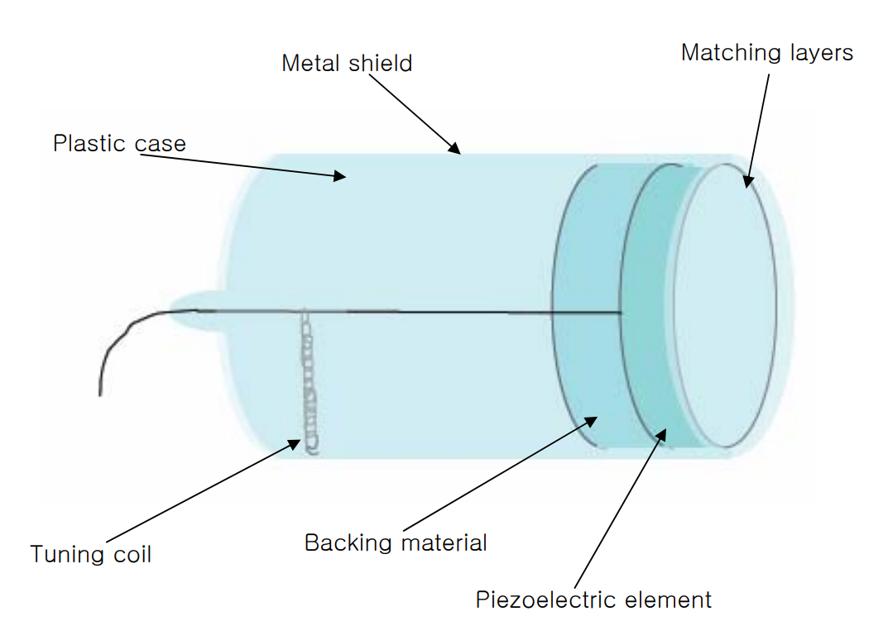

단일 소자(single element) 트랜스듀서
초음파 진단기용 트랜스듀서에는 single element와 array가 있는데 이번 포스트에서는 single만 다룬다.
압전효과(Piezoelectric effect)
압전효과: 수정(crystal)과 같은 압전체를 누르면(압력을 가하면) 전기가 생기는 효과
요즘의 초음파진단기에 사용되는 압전체는 대부분 PZT이다.
여기서 PZT는 P:납, Z:지르코늄. T:티타늄을 의미하는 것으로 세라믹에 이러한 원소들을 첨가해 구운 재료이다.
첨가물을 넣은 PZT는 압전성이 거의 없는 소재인데 압전성을 띠게 하려면 미세 결정들이 한 쪽 방향으로 정렬시켜야 한다. 여기서 미세 결정들이 같은 방향으로 정렬하는 것을 분극(Poling) 이라고 한다.
PZT를 분극 상태로 만들기 위해 Curie온도 이상으로 물질을 가열하고 높은 전압을 일정 시간 소자에 가하며 식히는 과정을 통해 분극 상태의 PZT를 얻는다.
분극 상태의 PZT, 즉 압전소자에 펄스 전압을 가하면 압전현상으로 인해 소자에 순간적으로 압력이 작용하여 순간적인 변형이 발생했다가 원래의 모양으로 되돌아오는데 이때 소자 자체의 고유 진동주파수(공진 주파수)에 따라 어느 시간동안 진동한다. 이 때의 고유진동주파수(\(\lambda\)) 는 두께에 반비례하고 소자 내의 음속 에 비례한다.
트랜스듀서의 기본 구조

압전소자 (piezoelectric element)
압전소자는 위에서 언급한 것처럼 초음파를 발생시키고 받아들이는 역할을 한다.
- 소자의 고유진동주파수와 입력되는 전기신호의 주파수가 같을 때 가장 효율적으로 초음파로 변환되어 내보낼 수 있다.
- 반대로 받아들이는 초음파(반사되는 초음파)의 주파수가 공진주파수와 같을 때 가장 효율적으로 전기신호로 변환된다.
정합층 (Matching Layer)
압전소자와 인체 연부조직의 음향 임피던스 차이는 약 20배 정도된다. 그렇기 때문에 압전소자에서 바로 연부조직으로 초음파를 발생시킨다면 대부분은 경계면을 투과하지 못하고 반사된다. 일부 투과한 초음파도 대부분이 연부조직으로 반사되어 나간다. 이러한 문제, 즉 음향 임피던스의 차이를 줄여주는 것이 정합층의 역할 이다.
정합층을 적절한 두께와 물질(적절한 음향 임피던스를 갖는 물질)로 만든다면 위와 같은 반사를 없애주어서 전달 효율이 최대로 할 수 있다.
- 정합층의 적절한 두께는 \(\frac{\lambda}{4}\)이어야 한다.
- 적절한 정합층의 음향 임피던스는 다음과 같다. \(Z_{정합층} = \sqrt{Z_{연부조직} \times Z_{압전소자}}\)

배킹 물질 (Backing Material)
압전소자에 전압을 가하면 초음파는 압전소자의 앞, 뒷면 모두 발생하게 된다. 하지만 우리는 초음파가 앞으로만 진행되는 것을 원하므로 뒤로 가는 초음파는 없애야 하고 이런 역할은 배킹 물질이 해준다.
또한 진동을 억제하여 펄스 폭을 짧게 해주는 것을 댐핑(damping) 이라 하는데 이러한 기능도 배킹 물질이 담당한다. 짧은 펄스 전기신호를 트랜스듀서에 가해 준 경우, 발생하는 초음파의 길이는 댐핑을 많이 할수록 짧아진다. 하지만 초음파의 세기 또한 약해지므로 트랜스듀서의 효율 또한 떨어지게 된다.
마지막으로 트랜스듀서를 받쳐 줌으로써 프로브를 기계적 충격으로부터 보호한다.
단일 소자 트랜스듀서와 음장
음장
음장: 음파가 전파하는 영역
단일 소자 트랜스듀서에 CW의 전기신호를 가하면 아래 그림과 같은 음장이 발생한다.
CW란, continous wave의 약자로 일정한 진폭과 주파수를 가지는 정현파(sinusoidal wave)를 의미
무한대의 면적을 가진 평면진동자는 초음파가 평면파가 되어 진행하지만, 유한한 면적의 평면진동자는 아래 그림과 같이 음파가 진행한다.

호이겐스 원리
파면: 위상이 같은 지점을 연결한 선이나 면, 즉 골과 골 또는 마루와 마루를 이은 선으로 이는 파동 진행 방향에 수직이다.
호이겐스 원리: 파면은 점파원들이 만들어낸 구면파의 접선이다.
위의 그림 3을 보면 근거리 음장(Fresnel zone; 근거리 갑섭대) 에서는 초음파가 복잡하게 간섭하며 진행한다. 해당 영역에서는 근사적으로 평면파로서 전파하고 있다고 생각할 수 있다.
원거리 음장(Fraunhofer zone) 에서는 근사적으로 구면파가 되어 넒게 전파한다.
근거리 음장과 원거리 음장은 \(D^2/(4*\lambda)\)를 기준으로 나눠졌는데 여기서 D는 진동자의 직경(aperture size)이고 \(\lambda\)는 초음파의 파장을 의미한다.